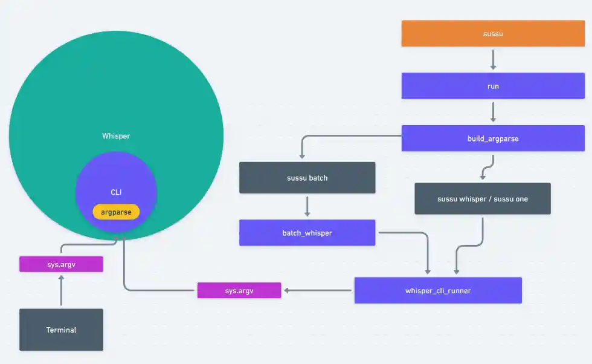

sussu(rro): CLI educacional com OpenAI Whisper
Ferramenta de linha de comando focada em educação e IA offline. Utiliza o poder do Whisper da OpenAI para transcrever áudios e vídeos de forma simples e eficiente.
Esses são todos os links que menciono nos dois vídeos:
- (🚫 FAILED) whisper em tempo real via microfone
- logging — Logging facility for Python
- sussu(rro): CLI educacional com OpenAI Whisper
- openai / whisper
🎥 Parte 1 — CLI do Whisper:
💻 Parte 2 — Código do sussu com Python + Whisper:
Sobre o Whisper e a OpenAI
Estava curioso para saber se a OpenAI usa o Whisper em seus próprios produtos, então questionei o ChatGPT...
Eu: A OpenAI usa o Whisper internamente em algum recurso que as pessoas consomem?
ChatGPT: Sim, a OpenAI usa o Whisper como base para recursos de transcrição e compreensão de áudio em produtos como o ChatGPT com entrada de voz. Ele também é utilizado em APIs que envolvem reconhecimento de fala, como aspeech-to-textda OpenAI.
Sobre este documento:
Estou tentando manter este documento (README.md)
sincronizado com o link abaixo. Caso não encontre o que procura aqui,
acesse:
Introdução geral
Ao rodar este projeto, uma das primeiras coisas que você vai querer
fazer é usar o comando whisper para fazer a transcrição
inicial de algum vídeo ou áudio. Essa transcrição é um ótimo jeito de
ver na prática como o Whisper trabalha e o que
esperar dos resultados.
Vamos começar pela instalação do projeto, isso já
coloca os comandos sussu e
whisper funcionando direto no seu terminal.
Instalação do sussu
Se você encontrar alguma dificuldade com o ambiente, recomendo meu tutorial completo:
Este projeto utiliza o Python 3.11.9 por questões de compatibilidade com o Whisper. Evite alterar essa versão se não souber o que está fazendo, pois eu já testei tudo para você.
Além disso, este projeto usa o
uv para o
gerenciamento geral (pacotes, versão do Python, etc.).
Para instalar tudo, basta rodar o comando:
# Se ainda não clonou o repositório
git clone https://github.com/luizomf/sussu.git
# Acesse a pasta do projeto
cd sussu
# Sincronizando
uv sync
# é só isso mesmo 😅uv sync é suficiente para:
- Baixar e instalar o
python 3.11.9 - Criar o ambiente virtual em
.venv - Instalar os pacotes necessários
- Buildar o
whispere osussu
ffmpeg
Você também precisará ter o
ffmpeg instalado. Ele é um software de
código aberto com várias ferramentas e bibliotecas para trabalhar com
arquivos multimídia, especialmente áudio e vídeo. Embora o
whisper foque na transcrição de áudio, o
ffmpeg é quem permite que você transcreva seus vídeos
diretamente, sem precisar convertê-los para áudio antes.
Para instalar o ffmpeg no seu sistema, você pode usar um
dos comandos abaixo. Eles foram retirados diretamente do
repositório oficial do whisper:
# No Ubuntu ou Debian
sudo apt update && sudo apt install ffmpeg
# No Arch Linux
sudo pacman -S ffmpeg
# No macOS com Homebrew (https://brew.sh/)
brew install ffmpeg
# No Windows com Chocolatey (https://chocolatey.org/)
choco install ffmpeg
# No Windows usando Scoop (https://scoop.sh/)
scoop install ffmpeg
# Adicional: No Windows usando winget (https://winstall.app/apps/Gyan.FFmpeg)
winget install --id=Gyan.FFmpeg -eObservação: Dos comandos listados, os únicos que testei e aprovei (✅) foram os para macOS e Ubuntu.
Rodando pela Primeira Vez
Para verificar se tudo foi instalado corretamente, você tem duas
opções: ativar o ambiente virtual ou usar o comando
uv run. Sugiro que você teste com whisper -h. Esse comando
deve exibir a ajuda completa do whisper, indicando que
ele está funcionando. Veja os exemplos:
uv run whisper -h
# Ou, se você já ativou o ambiente virtual
whisper -hObservação: Editores de código como VS Code ou Zed podem ativar o ambiente virtual automaticamente ao abrir um novo terminal, desde que estejam configurados corretamente. Se for o seu caso, basta fechar e abrir o terminal novamente para que as mudanças façam efeito.
whisper -h: Entendendo Alguns Argumentos Importantes
Ao digitar whisper -h ou whisper --help,
você pode se surpreender com a quantidade de argumentos disponíveis.
Mas não se preocupe! Você não precisa saber o que cada um deles faz.
Na verdade, a maioria dos argumentos já vem com valores padrão que
funcionam perfeitamente. No entanto, se você quiser personalizar um
pouco o comportamento da ferramenta, vamos analisar alguns dos mais
importantes.
O whisper utiliza a biblioteca argparse do
Python para gerar essa documentação de ajuda (help)
completa e bem organizada. Se você tiver interesse em aprender mais
sobre como criar interfaces de linha de comando profissionais com
Python, confira meu vídeo:
Argumentos Essenciais do whisper
Vamos começar com os argumentos que você usará com mais frequência:
audio: Este é o argumento posicional principal. Ele
representa o caminho completo (localização) do arquivo de áudio ou
vídeo que você quer transcrever.
Exemplo:
whisper /caminho/do/seu/arquivo.mp4No exemplo acima, você notou que especificamos apenas o caminho do arquivo de vídeo. Nas próximas seções, vou detalhar as opções que mais utilizo para personalizar a transcrição.
--model MODEL: Este argumento serve para
definir qual modelo será usado na transcrição do seu
áudio ou vídeo. Ele é opcional, e o valor padrão é turbo.
O modelo turbo é excelente: rápido e multilíngue, mas
requer cerca de 6GB de VRAM para rodar.
Talvez você queira usar outros modelos que exigem mais ou menos
recursos do seu hardware, ou que possuem mais ou menos parâmetros
(como base, small, medium,
etc.).
Aqui estão os modelos disponíveis e seus requisitos aproximados de VRAM:
-
tiny: 39M parâmetros,tiny.enetiny, VRAM ~1 GB -
base: 74M parâmetros,base.enebase, VRAM ~1 GB -
small: 244M parâmetros,small.enesmall, VRAM ~2 GB -
medium: 769M parâmetros,medium.enemedium, VRAM ~5 GB -
large: 1550M parâmetros,large,large-v2elarge-v3, VRAM ~10 GB -
turbo: 809M parâmetros,turbo, VRAM ~6 GB
VRAM é um tipo de memória RAM especializada que as placas de vídeo (GPUs) usam. Mas não se preocupe se você não tiver uma placa de vídeo dedicada! Se seu computador compartilha a RAM com a GPU, o que acontece em Macs com chips Apple Silicon (M1, M2, M3 e posteriores), por exemplo, você conseguirá usar os modelos do Whisper normalmente.
Nesses casos, o que realmente limita é a
quantidade total de memória RAM disponível no seu sistema. Por exemplo: se você tem apenas 8GB de RAM, o ideal é testar os
modelos tiny, base ou small.
A partir do modelo medium, é bem provável que você
perceba uma
queda drástica no desempenho geral da sua máquina, já
que a memória será completamente consumida.
Exemplo:
whisper /caminho/do/seu/arquivo.mp4 --model large-v2
--device DEVICE: Este argumento é para você que possui uma
placa de vídeo NVIDIA com drivers CUDA e uma versão
compatível com o PyTorch. Se for o seu caso, vale a pena usar
--device cuda para aproveitar o processamento da GPU.
Caso contrário, não se preocupe em alterar esta opção, o padrão é
cpu (processamento pela CPU) e funcionará perfeitamente.
Exemplo:
whisper /caminho/do/seu/arquivo.mp4 --model large-v2 --device cpu
--output_dir ou -o: Define o
caminho da pasta onde as transcrições serão salvas.
Por padrão, os arquivos serão salvos na raiz do projeto
(.).
--output_format ou -f: Permite que você escolha o
formato da transcrição ou legenda gerada. As opções
disponíveis são: txt, vtt, srt,
tsv, json e all (que gera todos
os formatos). O padrão é all.
Exemplo:
O arquivo de saída será srt (SubRip) na pasta indicada em
-o. Essa pasta será criada caso não exista.
whisper /caminho/do/seu/arquivo.mp4 --model turbo -o caminho/da/pasta_de_saida -f srt
--task: Com este argumento, você pode escolher entre
transcrever o áudio no idioma original ou
traduzir para o inglês. As opções são
transcribe (o padrão, que transcreve no idioma falado no
áudio) ou translate (que traduz o conteúdo para o
inglês).
Exemplo:
whisper /caminho/do/seu/arquivo.mp4 --model turbo --task transcribe
--language: Este argumento permite que você
especifique o idioma falado no áudio ou vídeo.
Existem muitas opções de idiomas disponíveis. Se você não informar
esse argumento, o whisper é inteligente o suficiente para
detectar automaticamente o idioma do conteúdo.
Forma curta (language code):
["af", "am", "ar", "as", "az", "ba", "be", "bg", "bn", "bo", "br", "bs", "ca",
"cs", "cy", "da", "de", "el", "en", "es", "et", "eu", "fa", "fi", "fo", "fr",
"gl", "gu", "ha", "haw", "he", "hi", "hr", "ht", "hu", "hy", "id", "is", "it",
"ja", "jw", "ka", "kk", "km", "kn", "ko", "la", "lb", "ln", "lo", "lt", "lv",
"mg", "mi", "mk", "ml", "mn", "mr", "ms", "mt", "my", "ne", "nl", "nn", "no",
"oc", "pa", "pl", "ps", "pt", "ro", "ru", "sa", "sd", "si", "sk", "sl", "sn",
"so", "sq", "sr", "su", "sv", "sw", "ta", "te", "tg", "th", "tk", "tl", "tr",
"tt", "uk", "ur", "uz", "vi", "yi", "yo", "yue", "", "zh"]- Exemplo para português do Brasil:
--language pt
Forma longa (language name):
["Afrikaans", "Albanian", "Amharic", "Arabic", "Armenian", "Assamese",
"Azerbaijani", "Bashkir", "Basque", "Belarusian", "Bengali", "Bosnian",
"Breton", "Bulgarian", "Burmese", "Cantonese", "Castilian", "Catalan",
"Chinese", "Croatian", "Czech", "Danish", "Dutch", "English", "Estonian",
"Faroese", "Finnish", "Flemish", "French", "Galician", "Georgian", "German",
"Greek", "Gujarati", "Haitian", "Haitian Creole", "Hausa", "Hawaiian", "Hebrew",
"Hindi", "Hungarian", "Icelandic", "Indonesian", "Italian", "Japanese",
"Javanese", "Kannada", "Kazakh", "Khmer", "Korean", "Lao", "Latin", "Latvian",
"Letzeburgesch", "Lingala", "Lithuanian", "Luxembourgish", "Macedonian",
"Malagasy", "Malay", "Malayalam", "Maltese", "Mandarin", "Maori", "Marathi",
"Moldavian", "Moldovan", "Mongolian", "Myanmar", "Nepali", "Norwegian",
"Nynorsk", "Occitan", "Panjabi", "Pashto", "Persian", "Polish", "Portuguese",
"Punjabi", "Pushto", "Romanian", "Russian", "Sanskrit", "Serbian", "Shona",
"Sindhi", "Sinhala", "Sinhalese", "Slovak", "Slovenian", "Somali", "Spanish",
"Sundanese", "Swahili", "Swedish", "Tagalog", "Tajik", "Tamil", "Tatar",
"Telugu", "Thai", "Tibetan", "Turkish","Turkmen", "Ukrainian", "Urdu", "Uzbek",
"Valencian", "Vietnamese", "Welsh", "Yiddish", "Yoruba"]-
Exemplo para português do Brasil:
--language Portuguese
Se precisar de um dicionário completo com todos os idiomas e seus
códigos, ele está disponível em
whisper.tokenizer.LANGUAGES dentro do código do
whisper.
Exemplo:
# Para o comando ficar menor, vou manter tudo padrão
# model turbo (padrão)
# task transcribe (padrão)
# etc...
# Idioma falado no vídeo "Português"
whisper /caminho/do/seu/arquivo.mp4 --language pt
--temperature: controla a "criatividade"
do modelo. Vai de 0.0 a 1.0. Quanto mais
alto, mais liberdade o modelo tem pra decidir os próximos tokens. Esse
parâmetro interage com --beam_size,
--patience e --best_of.
--beam_size: número de hipóteses que o
modelo mantém em paralelo. Pensa como se ele testasse vários caminhos
ao mesmo tempo e no fim escolhesse o melhor. O padrão é
5 e
só funciona se --temperature == 0.0.
--patience: fator de tolerância que faz
o modelo continuar explorando novas hipóteses mesmo depois de achar
uma aceitável. Requer --temperature == 0.0 e
--beam_size > 1.
--best_of: número de amostras diferentes
geradas antes de escolher a melhor. Funciona apenas quando
--temperature > 0.0.
Cola rápida:
# - temperature > 0 → usa sampling
# ✅ --best_of 5 (5 amostras)
# 🔴 --beam_size (ignorado)
# 🔴 --patience (ignorado)
#
#
# - temperature == 0 → usa beam search
# ✅ --beam_size 5 (5 hipóteses)
# ✅ --patience 2 (2 x 5 = 10 hipóteses)
# 🔴 --best_of (ignorado)
#
# - temperature == 0 → greedy
# ✅ --beam_size 1 (1 hipótese)
# 🔴 --patience (não faz diferença)
# 🔴 --best_of (ignorado)
Importante: Quanto maiores os valores de
--beam_size, --patience e
--best_of, mais lento e "indeciso" o modelo tende a
ficar. Isso acontece porque ele precisa gerar mais hipóteses ou
amostras e, em seguida, tomar uma decisão entre elas. Faça testes
rápidos para confirmar esse comportamento.
Observação sincera:
Na prática, o modelo vai responder como foi treinado, independente do
seu capricho nas configs. Trocar temperature,
beam_size, patience e afins pode virar
desperdício de tempo.
Recomendação direta: só mexa nessas opções se:
- o modelo começar a repetir palavras (loop)
- estiver errando demais em blocos grandes
Se for só por causa de uma ou duas palavras... aceita e segue. Ou então faz igual eu: testa tudo por uma semana e conclui que o padrão já era bom 😅
Exemplo:
O arquivo de saída será srt (SubRip) na pasta indicada em
-o. Essa pasta será criada caso não exista.
# Greedy: Mais rápido, mas pode errar mais por considerar apenas uma hipótese por vez.
whisper /caminho/do/seu/arquivo.mp4 --temperature 0.0 --beam_size 1
# Beam Search: Utiliza 3 hipóteses em paralelo.
# O 'patience' padrão é 1.
whisper /caminho/do/seu/arquivo.mp4 --temperature 0.0 --beam_size 3
# Sampling: Gera 5 amostras diferentes para escolher a melhor.
whisper /caminho/do/seu/arquivo.mp4 --temperature 0.7 --best_of 5
--temperature_increment_on_fallback: Este argumento permite que você
aumente a temperatura do modelo em casos de falha na
transcrição. Se o modelo encontrar dificuldades na temperatura 0.0,
ele fará um "fallback" e tentará com a temperatura incrementada. O
valor também varia de 0.0 a 1.0. No entanto,
cuidado: definir 0.0 para este argumento causará um
erro ZeroDivisionError: float division by zero
(isso pode ser um pequeno "bugzinho" 🫣, mas, de fato, não faria muito
sentido usar zero aqui, já que o objetivo é justamente
incrementar a temperatura). O valor padrão é
0.2.
--max_line_width: Define a
quantidade máxima de caracteres por linha na sua
legenda. O valor padrão é 1000 (um limite bastante alto,
codificado diretamente na classe SubtitlesWriter do
whisper). Eu, particularmente, costumo usar
45 para uma melhor legibilidade.
Importante: Se este argumento for utilizado, ele
anula o --max_words_per_line.
Requer --word_timestamps True.
--max_line_count: Controla a
quantidade máxima de linhas por legenda (ou "bloco"
de texto). Eu uso o valor 2, mas, nos meus testes,
percebi que isso força todas as legendas a terem sempre duas linhas.
Para mim, não é um problema, mas vale a pena você testar para ver como
se adapta ao seu caso.
Requer --word_timestamps True.
--max_words_per_line: Determina a
quantidade máxima de palavras por linha na legenda. O
padrão também é um valor alto, 1000 (também "hardcoded"
na classe SubtitlesWriter). Embora eu não costume usá-lo,
acredito que 5 palavras por linha pode resultar em uma
leitura mais confortável. Atenção: Será anulado por
--max_line_width caso você use ambos no mesmo comando.
Requer --word_timestamps True.
--highlight_words: Este é o argumento responsável por criar o
efeito de "karaokê" na sua transcrição. Ele faz com
que cada palavra falada seja sublinhada no momento exato em que é
pronunciada.
Requer --word_timestamps True.
--word_timestamps: Este argumento é a chave para ativar os recursos
de sincronização detalhada. Ao defini-lo como True, o
modelo passará a gerar timestamps para cada palavra,
em vez de apenas por blocos de frase. Isso pode, sim, aumentar
consideravelmente o tempo de transcrição, mas é um requisito
fundamental para que vários outros argumentos (como os de formatação
de linha e destaque de palavras) funcionem. O valor padrão é
False.
Exemplo Completo de Transcrição Detalhada
Veja um exemplo de como combinar vários desses argumentos para obter uma transcrição formatada e com destaque de palavras:
# A '\' (barra invertida no final da linha) é usada apenas para indicar que
# o comando continua na linha de baixo. Isso é uma boa prática para evitar
# que o comando fique muito longo na horizontal e melhora a legibilidade.
whisper meu_video.mp4 \
--model large-v2 \
--language pt \
--output_format srt \
--word_timestamps True \
--highlight_words True \
--max_line_width 45 \
--max_line_count 2
--initial_prompt:
Este é um texto opcional que serve como um "empurrãozinho" para o modelo antes que ele comece a transcrever. Funciona como uma dica de estilo ou contexto. No entanto, é importante notar que ele só influencia a primeira "janela" do áudio (que por padrão tem 30 segundos).
Exemplo Prático:
Se o seu vídeo é sobre programação, especificamente Python, você pode passar um prompt como este:
--initial_prompt "vídeo de uma explicação sobre programação com destaque para bibliotecas do Python"
Isso pode ajudar o modelo a reconhecer e transcrever termos técnicos
de programação e Python com mais precisão. Mas, como dito, não espere
milagres para o vídeo inteiro; essa influência é apenas um toque
inicial. Para as janelas seguintes, o modelo pode usar o texto
transcrito anteriormente, se a opção
--condition_on_previous_text estiver como
True (que é o padrão).
Analogia para Entender Melhor:
Imagine que é como dizer para um cantor, antes de ele subir no palco:
"Tem 300 mil pessoas te esperando, detona lá!"
Ele vai subir já no clima certo, mas o resto da performance dependerá do show em si.
Da mesma forma, o modelo continua a transcrição com base no que "ouviu" e transcreveu depois do prompt inicial.
Cuidados com o --initial_prompt:
O --initial_prompt pode afetar significativamente a forma
como o modelo do whisper opera. Em alguns casos, ele pode
levar à geração de legendas excessivamente longas ou até mesmo fazer o
modelo entrar em loops de repetição.
Recomendação: Antes de aplicar um prompt em um vídeo completo, faça testes rápidos em um trecho menor do seu vídeo para observar o resultado. Isso evita surpresas e economiza tempo de processamento.
Para cortar facilmente um pedaço do seu vídeo para testes, você pode
usar o ffmpeg com o seguinte comando:
# Com ffmpeg
ffmpeg -i entrada.mp4 -c:v copy -c:a copy -ss 00:05:00.000 -to 00:10:00.000 saida.mp4
# Também dá pra usar --clip_timestamps start, end, start, end... (em segundos)
# O argumento --clip_timestamps é detalhado mais abaixo nesse texto
# No comando abaixo ele transcreve de 1min até 2min (nada mais)
whisper meu_video.mp4 --clip_timestamps 60,120
Entendendo o Comando ffmpeg:
-
-i entrada.mp4: Define o arquivo de vídeo de entrada (o seu vídeo original). -
-c:v copy: Copia o codec de vídeo do arquivo original, sem recodificar. Isso torna o processo muito mais rápido! -
-c:a copy: Copia o codec de áudio do arquivo original, também sem recodificar. -
-ss 00:05:00.000: Especifica o ponto de início do corte (neste exemplo, 5 minutos e 0 segundos do vídeo original). -
-to 00:10:00.000: Define o ponto final do corte (neste exemplo, 10 minutos e 0 segundos do vídeo original).
Este comando irá gerar um novo arquivo de vídeo
(saida.mp4) contendo apenas o segmento entre 00:05:00 e
00:10:00 do vídeo original. Essa técnica é extremamente útil,
especialmente para vídeos mais longos (como os meus de 30+ minutos),
pois permite testar configurações específicas em um pedaço pequeno sem
ter que processar o vídeo inteiro.
--condition_on_previous_text:
Este argumento crucial define se o texto que já foi transcrito será usado como contexto para ajudar a transcrever a próxima "janela" do áudio.
-
True(padrão): É a configuração ideal para a maioria dos casos. Ela ajuda a manter a fluidez e a consistência do texto, garantindo uma boa coesão entre os blocos da transcrição. -
False: Desativa o uso do contexto anterior. Isso pode ser útil para evitar "loops de erro", onde o modelo fica repetindo frases ou palavras indefinidamente.
Exemplo de Uso:
Se a transcrição começar a errar e ficar repetindo, por exemplo,"Olá, pessoal, hoje vamos falar sobre..."em loop, desativar este argumento (--condition_on_previous_text=False) pode quebrar esse ciclo vicioso.
Recomendações Gerais para Contexto
Para otimizar suas transcrições, considere as seguintes dicas:
-
Para vídeos bem gravados, com
áudio limpo e
sem erros ou repetições evidentes, mantenha o
padrão:
--condition_on_previous_text=True. -
Se o modelo começar a repetir frases ou palavras de
forma indesejada, experimente mudar para
--condition_on_previous_text=False. -
O
--initial_promptpode ajudar somente no início da transcrição. Não espere que ele resolva problemas de consistência para o vídeo inteiro, mas pode ser útil para guiar o modelo em termos específicos.
Parâmetros que não usei (ou quase não usei 🫣):
Esses parâmetros aí de baixo eu não testei quase nada (apenas alguns). Só li a documentação, pesquei uma ideia geral e traduzi pra você não precisar sofrer. Se quiser fuçar, fuce, mas vai por sua conta e risco. Pode ser que melhore algo, pode ser que não mude nada. Vai depender do áudio, da fase da lua e do humor do modelo 😅.
Se eu começar a usar alguma dessas opções nas minhas transcrições, prometo que volto aqui e atualizo esse trecho. Alguns deles eu cheguei a testar de forma supercifical (explico nos argumentos).
--length_penalty
Controla a penalização para sequências longas. Valor típico:
entre 0.6 e 1.0. Se você notar que a
transcrição tá muito curta ou longa, pode brincar com isso. Eu não
toquei neste argumento.
--suppress_tokens
Permite suprimir tokens pelo ID. O valor -1 (padrão) já
suprime símbolos esquisitos e só mantém pontuações comuns. Deixa
assim, a menos que você saiba o que está fazendo.
Exemplo:
# Isso aqui vai cortar algumas coisas úteis (só exemplo).
# Seu texto não terá: 'Olá', 'pessoal', ',', 'este', 'é', 'meu', 'texto', '.'
# Obs: texto sem ponto e vírgula fica horrível
whisper /caminho/do/seu/arquivo.mp4 \
--model turbo \
--language pt \
--suppress_tokens=38056,842,24811,11,4065,1136,9230,35503,13Quer saber o ID de um token específico?
Seguinte, se você que descobrir algum token para suprimir ou para qualquer outra coisa, veja um exemplo:
>>> from whisper.tokenizer import get_tokenizer
# get_tokenizer -> multilingual, num_languages=99, language='pt', task='transcribe'
# True, 99 Qual idioma Qual task
>>> tokenizer = get_tokenizer(True, num_languages=99, language='pt', task='transcribe')
# tokenizer.encode você passa o 'valor' e recebe os tokens List[int]
>>> tokenizer.encode('Olá pessoal, este é meu texto.')
[38056, 842, 24811, 11, 4065, 1136, 9230, 35503, 13]
# tokenizer.decode você passa os tokens List[int] e recebe o 'valor'
>>> tokenizer.decode([38056, 842, 24811, 11, 4065, 1136, 9230, 35503, 13])
'Olá pessoal, este é meu texto.'
>>>
--fp16
Usa precisão float16 para acelerar em GPU.
No Mac M1, por exemplo, eu sempre uso --fp16 False, assim
ele não fica mostrando warning de que trocou pra float32.
Essa troca acontece automaticamente se o seu hardware
não suportar float16, então:
- Se suportar: passa direto com float16.
- Se não suportar: ele mostra um aviso e troca para float32 sozinho.
Exemplo do warning:
FP16 is not supported on CPU; using FP32 instead
--compression_ratio_threshold
Se a razão de compressão (gzip) do texto for muito alta, ele assume
que houve erro (textos muito repetitivos). Valor padrão é
2.4. Útil pra detectar loop de repetição.
Como funciona a ideia:
O Whisper pega o texto, compacta com gzip e compara o tamanho original com o tamanho compactado para calcular a razão de compressão. Textos repetitivos geram compressões mais eficientes, ou seja, razão mais alta.
-
"Olá, olá, olá, olá, olá..."→ compacta muito → alta razão -
"O rato roeu a roupa do rei de Roma."→ mais diversidade → menor razão
Se a razão ultrapassar o limite definido (padrão: 2.4), o
Whisper descarta o trecho por considerá-lo
problemático (repetitivo, bugado etc).
Se sua transcrição estiver falhando sem motivo claro,
esse filtro pode ser o culpado. Teste com
--compression_ratio_threshold 0 e veja se melhora.
--logprob_threshold
Se a média do logaritmo da probabilidade (logprob) dos tokens estiver
abaixo disso, ele trata como erro. Padrão: -1.0. Você
consegue ver avg_logprob (média do logaritmo da
probabilidade) das frases transcritas pelo Whisper no arquivo
.json final gerado. Este arquivo contém algo similar a
isso:
{
"id": 102,
"seek": 27632,
"start": 293.8,
"end": 294.66,
"text": " primeiro os imports",
"tokens": [51240, 18314, 3003, 41596, 51283],
"temperature": 0.0,
"avg_logprob": -0.08265516709308235,
"compression_ratio": 1.7523364485981308,
"no_speech_prob": 1.1688144375965326e-11,
"words": [
{
"word": " primeiro",
"start": 293.8,
"end": 294.06,
"probability": 0.7435079216957092
},
{
"word": " os",
"start": 294.06,
"end": 294.24,
"probability": 0.9965941309928894
},
{
"word": " imports",
"start": 294.24,
"end": 294.66,
"probability": 0.990346372127533
}
]
}
Aqui avg_logprob é -0.08265516709308235.
Quanto mais próximo de 0, mais confiante está o modelo.
Suponha que o modelo está descartando coisas na transcrição. Você
poderia testar --logprob_threshold=-2.0 ou até
--logprob_threshold=-1000 (não descarta nada).
Isso pode gerar muito ruído aleatório na transcrição, mas pode fazer ele detectar o que você quer.
O contrário também é verdadeiro. Se usar
--logprob_threshold=-0.1 (por exemplo), o modelo vai
pegar praticamente só o que tem certeza absoluta que tá certo. Isso
não é uma coisa boa ou ruim, depende do contexto e do seu objetivo. Na
dúvida, manter o padrão costuma ser uma escolha segura.
Quanto mais rigoroso, mais lento, porque ele vai tentar gerar várias hipóteses até alcançar esse nível de confiança. No fim das contas, ele vai te entregar um texto de qualquer jeito, mas pode demorar bem mais e talvez nem seja tão diferente assim.
--no_speech_threshold
Se o modelo acredita que é silêncio (probabilidade alta de
<|nospeech|>) e a decodificação
falha (logprob_threshold), ele descarta o trecho como
sendo silêncio. Isso ajuda a cortar "respiros vazios" da transcrição.
Essa funcionalidade me encanta, e tenho planos futuros pra ela. Quem sabe a gente não volta a falar disso mais pra frente?
--prepend_punctuations (com
--word_timestamps True):
Este argumento controla quais caracteres de pontuação que aparecem antes de uma palavra devem ser "colados" à palavra seguinte, em vez de serem tratados como um token separado.
-
Padrão:
\"\'“¿([{-(inclui aspas, parênteses, etc.) e requer--word_timestamps True.
Em teoria, se o modelo gerasse, por exemplo, os tokens (,
arg, ument, os,
) separadamente (tipo:
[7, 33544, 2206, 329, 8] que formariam
(argumentos)), o ( e o
arg seriam unidos para formar (arg.
Observação Importante: eu testei o
whispercom os idiomasPortugueseeEnglish(90% emPortuguese, que é meu caso de uso). Em nenhuma das legendas que gerei houve qualquer caso onde a pontuação viesse antes de alguma palavra. Na prática, eu realmente não usei este parâmetro.
--append_punctuations (com
--word_timestamps True):
Este argumento controla quais caracteres de pontuação que aparecem depois de uma palavra devem ser "colados" à palavra anterior.
-
Padrão:
\"\'.。,，!！?？:：”)]}、(inclui aspas, pontos, vírgulas, interrogações, etc.) e requer--word_timestamps True.
Por exemplo, se os tokens gerados forem Ok e
? separadamente, e o ? estiver incluído
nesta lista (o que já está por padrão), eles serão unidos para formar
Ok?.
Dica Prática: Esses argumentos de pontuação só farão
uma diferença perceptível se você precisar que o ponto ou outro
símbolo tenha um timestamp exatamente separado
da palavra, o que é um caso de uso bastante específico. Na maioria das
situações, o padrão do whisper já é bastante robusto. Do
contrário, e para simplificar, mantenha os valores padrão.
Outros úteis
--threads
Define o número de threads que o modelo vai usar na CPU.
Exemplo: --threads 4. Se não passar nada, ele usa o
padrão da Torch (geralmente via MKL ou OMP).
Nos meus testes (Mac M1), usei 1, 4, 10, 100, 1000. O
resultado? Ele só criou mais threads e usou mais CPU,
mas a velocidade de transcrição não mudou absolutamente
nada.
Claro, meus testes foram superficiais. Pode ser que em outro sistema, com outra CPU (ou invocando Cthulhu no terminal), você veja alguma diferença. Eu? Só vi o cooler suando.
--clip_timestamps
Permite transcrever ou traduzir apenas trechos específicos do áudio ou
vídeo. Você passa os intervalos como pares start,end (em
segundos). Pode usar vários.
Exemplos:
-
--clip_timestamps 10,30→ transcreve de 10s até 30s --clip_timestamps 60,120→ de 1min até 2min-
--clip_timestamps 10,30,60,120→ dois trechos: 10s–30s e 1min–2min -
⚠️
--clip_timestamps 270→ de 4min30s até o final -
⚠️
--clip_timestamps 60,120,0→ transcreve de 1min–2min e depois recomeça do zero até o fim
Atenção:
Esse último exemplo (60,120,0) parece um caso não
previsto.
O 0 vem depois de 120, mas não forma um par
start,end.
Nos testes, isso gerou um comportamento curioso: o modelo transcreveu normalmente de 1min até 2min, e depois do início até o final.
Mesmo assim, o VLC interpretou direitinho. Ele realinhou os blocos e ignorou os duplicados, mostrando só o que fazia sentido cronológico (aparentemente cortando o primeiro minuto).
--hallucination_silence_threshold
Funciona junto com --word_timestamps True.
Ele tenta detectar trechos de silêncio longos que o modelo pode ter "alucinado" (inventado texto).
Se você passar --hallucination_silence_threshold 1.5, ele
vai
ignorar silêncios maiores que 1.5s que geraram texto
suspeito. Não toquei nesse argumento.
Usando o Whisper via código
Para usar o whisper via código, é bem simples. Como
informado no repositório deles, basta usar o seguinte para uso normal
do whisper.
import whisper
model = whisper.load_model("turbo")
result = model.transcribe("audio.mp3")
print(result["text"])Para um acesso de mais baixo nível:
import whisper
model = whisper.load_model("turbo")
# load audio and pad/trim it to fit 30 seconds
audio = whisper.load_audio("audio.mp3")
audio = whisper.pad_or_trim(audio)
# make log-Mel spectrogram and move to the same device as the model
mel = whisper.log_mel_spectrogram(audio, n_mels=model.dims.n_mels).to(model.device)
# detect the spoken language
_, probs = model.detect_language(mel)
print(f"Detected language: {max(probs, key=probs.get)}")
# decode the audio
options = whisper.DecodingOptions()
result = whisper.decode(model, mel, options)
# print the recognized text
print(result.text)E como eu fiz meu código?
Eu fiz o código de uma forma que eu continuasse usando todos os
parâmetros do whisper, porém, adicionando minha própria
lógica.
Basicamente eu simulo que os argumentos estão sendo enviados para mim
com sys.argv do Python. No Diagrama abaixo eu mostro o
processo do "terminal" até chegar ao argparse, e do lado
direito, como montei meu código também chamando o argparse.
 Diagrama exibindo como usei o `sys.argv` para simular o terminal no meu código
Veja o código a seguir. Só para constar, tem um logger em outro módulo com o seguinte código.
import logging
from rich.logging import RichHandler
logging.basicConfig(
level="CRITICAL",
format="%(message)s",
datefmt="[%H:%M]",
handlers=[
RichHandler(
show_time=True,
show_level=True,
rich_tracebacks=True,
omit_repeated_times=False,
markup=False,
)
],
)
logger = logging.getLogger("rich")Agora sim, vamos ver o código. Deixei vários comentário explicando tudo.
import argparse
from pathlib import Path
import rich_argparse
from sussu.basic_logger import logger
# Example commands:
#
# sussu whisper ~/Desktop/videos/part_0004.mp4 --temperature 0 --beam_size 1 \
# --device cpu --fp16 False --output_format srt --model tiny --language pt \
# --output_dir ~/Desktop/videos/
#
# sussu one ~/Desktop/videos/part_0004.mp4 --temperature 0 --beam_size 1 \
# --device cpu --fp16 False --output_format srt --model tiny --language pt \
# --output_dir ~/Desktop/videos/
#
# sussu batch --input_dir ~/Desktop/videos/ --temperature 0 --beam_size 1
# --device cpu --fp16 False --output_format srt --model tiny --language pt
# -s video.mp4 part_0000.mp4 --skip_files part_0001.mp4
# --output_dir 'this wont do anything here'
# Essa função é basicamente um jeito de "enganar" o cli do `whisper`
# para que ele "entenda" que está sendo chamado com determinados argumentos.
def whisper_cli_runner(whisper_args: list[str]) -> None:
import sys
# `whisper` não tem stub, por isso o pyright vai gerar erro (ignorado)
from whisper.transcribe import cli as whisper_cli # pyright: ignore
# Aqui está a malícia. Vamos fingir que o python está recebendo os argumento
# via sys.argv. Com isso o argparse entra em ação da mesma forma que
# entraria se estivesse sendo executado via linha de comando.
sys.argv = ["whisper", *whisper_args]
whisper_cli()
# Essa é a nossa função que vai processar os arquivos usando o whisper original
def batch_whisper(
input_dir: Path, whisper_raw_args: list[str], skip_files: list[str] | None = None
) -> None:
# Vamos preencher essa lista com os dados que precisamos
whisper_args: list[str] = []
# As extensões abaixo podem não conter todas as extensões suportadas pelo
# ffmpeg, sinta-se à vontade para adicionar novas extensões
# fmt: off
allowed_extensions = {
".mp3", ".wav", ".flac", ".aac", ".m4a", ".ogg", ".opus", ".mp4", ".mkv",
".webm", ".mov", ".avi", ".3gp", ".wmv",
}
# fmt: on
# Às vezes tem alguns arquivos na mesma pasta que são válidos, mas não
# queremos transcrever (eu só queria agilizar meus testes manuais)
if not skip_files:
skip_files = []
# Passamos em todos os arquivos da pasta enviada pelo usuário
for file in input_dir.iterdir():
skip_loop = False
########## VAMOS PULAR ALGUNS ARQUIVOS PARA EVITAR ERROS ##########
# Pulamos quando é um subdiretório
if file.is_dir():
logger.warning(f"Directory not allowed: {file.name}")
continue
# Pulamos se a extensão não for permitida
if file.suffix not in allowed_extensions:
logger.error(f"File extension not allowed: {file.name}")
continue
# Pulamos também quando o usuário pede para pular aquele arquivo via -s
for skip_file in skip_files:
if str(file).endswith(skip_file):
logger.info(f"File skipped: {file.name}")
skip_loop = True
if skip_loop:
skip_loop = False
continue
############ DAQUI EM DIANTE VAI PARA O WHISPER ##########
# O argumento posicional vai sozinho no primeiro índice
# depois os argumentos desconhecidos
whisper_args.extend([str(file), *whisper_raw_args])
logger.debug(f"audio set as {file!s}")
# Por fim, adicionamos o outdir para ser sempre a pasta onde está
# o arquivo original. Isso gera um arquivo de mesmo nome com a extensão
# `.srt`.
logger.debug(f"--output_dir set to {file.parent}")
whisper_args.extend(["--output_dir", str(file.parent)])
# Desativa o modo verboso do `whisper` por padrão para que a gente possa
# ver nossos logs. Se o user passar algo, usa o que ele passar.
if "--verbose" not in whisper_args:
whisper_args += ["--verbose", "False"]
logger.debug("--verbose set to False by default")
# Agora só chamar o whisper com os argumentos que montamos
logger.debug(f"whisper commands are: {whisper_args}")
logger.debug(f"Final command: whisper {' '.join(whisper_args)}")
whisper_cli_runner(whisper_args)
# Zeramos os argumentos para o próximo loop
whisper_args = []
def build_argparse() -> argparse.ArgumentParser:
# Nosso main parser e o subparser para os comandos
parser = argparse.ArgumentParser(
prog="sussu", formatter_class=rich_argparse.RawDescriptionRichHelpFormatter
)
subparsers = parser.add_subparsers(dest="command", required=True)
########## WHISPER PARSER ##########
# Esse subparse só será usado como um wrapper do argparse do whisper.
# No final das contas, ele só vai chamar `whisper.transcribe.cli()`
whisper_parser = subparsers.add_parser(
"whisper",
help="Calls `whisper` directly",
conflict_handler="resolve",
aliases=["one"],
formatter_class=rich_argparse.RawDescriptionRichHelpFormatter,
)
whisper_parser.set_defaults(command="whisper")
# Esse argumento aqui é pra garantir que vamos chamar o help do whisper e
# não do nosso parser
whisper_parser.add_argument(
"-h", "--help", help="Shows `whisper` help.", action="store_true"
)
########## NOSSOS PARSERS ##########
# Minha ideia aqui é criar um subparser `batch` que vai receber um diretório
# com arquivos de vídeo. Vamos passar em todos os arquivos do diretório e
# usar o whisper para transcrever cada um deles.
batch_parser = subparsers.add_parser(
"batch",
help="Process files with `whisper` in batch mode",
formatter_class=rich_argparse.RawDescriptionRichHelpFormatter,
)
# Só coloquei essa função aqui para ficar próxima do argumento e facilitar
# minha explicação na hora de gravar.
def parse_input_dir(path_str: str) -> Path:
path = Path(path_str)
if not path.is_dir():
msg = f"{path_str!r} is not a directory"
raise argparse.ArgumentTypeError(msg)
return path.resolve()
# Isso deverá ser uma pasta que contém arquivos de vídeo ou áudio
batch_parser.add_argument(
"--input_dir",
help="Directory with files to work with",
type=parse_input_dir,
required=True,
)
# Para testar, eu estava pulando um monte de arquivos para ir mais rápido
batch_parser.add_argument(
"-s",
"--skip_files",
help="Name of file(s) to skip",
action="extend",
nargs="+",
default=[],
)
# Essa foi a maneira mais simples e direta de remover output_dir dos
# unknown_args. Se isso fosse para o whisper, geraria conflito
batch_parser.add_argument("-o", "--output_dir", help=argparse.SUPPRESS)
return parser
def run() -> None:
########## PARSE KNOWN ARGS ##########
# Vamos receber argumentos que são conhecidos (os nossos), e desconhecidos.
# Argumentos desconhecidos serão repassados para o whisper cli.
parser = build_argparse()
args, unknown_args = parser.parse_known_args()
# Se o comando for whisper, passamos tudo direto para o whisper
if args.command == "whisper":
# Simula -h e --help
if args.help:
whisper_cli_runner(["--help"])
return
# Executa o whisper normal, só que por baixo de `sussu`
# Ex.: `sussu whisper audio.mp3` chama o cli original do `whisper` com
# o argumento `audio.mp3` (ou qualquer outro argumento)
whisper_cli_runner(unknown_args)
return
# Se o comando for `batch`, fazemos nosso trabalho
if args.command == "batch":
batch_whisper(args.input_dir, unknown_args, args.skip_files)
if __name__ == "__main__":
run()É só isso! Obrigado por ler.